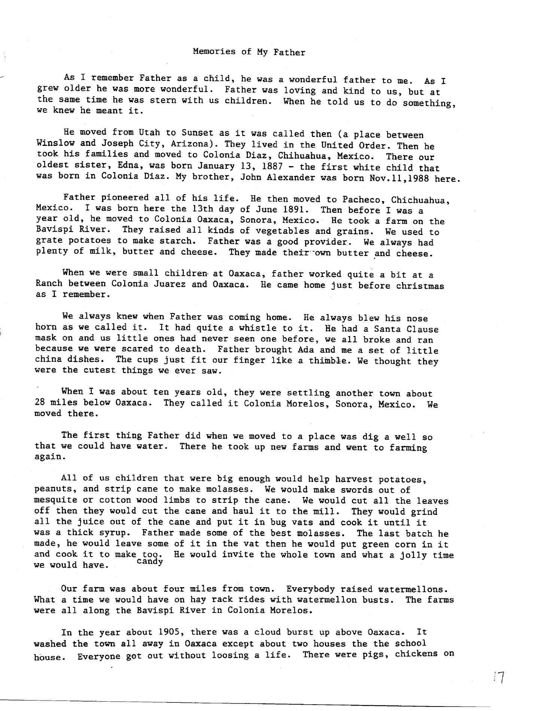
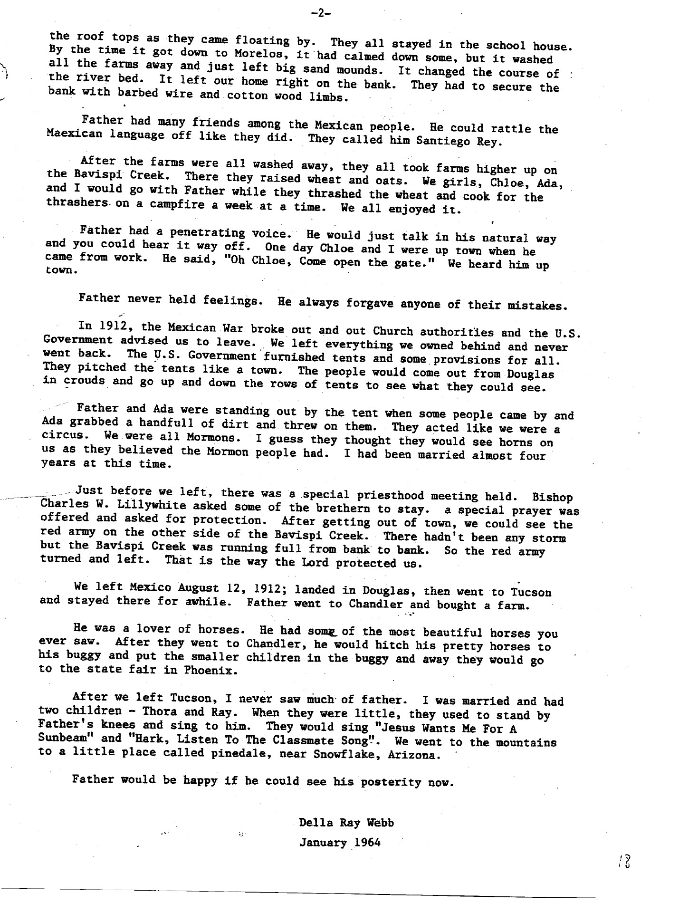

Memories of My Father As I remember Father as a child, he was a wonderful father to me. As I grew older he was more wonderful. Father was loving and kind to us, but at the same time he was stern with us children. When he told us to do something, we knew he meant it. He moved from Utah to Sunset as it was called then (a place between Winslow and Joseph City, Arizona). They lived in the United Order. Then he took his families and moved to Colonia Diaz, Chihuahua, Mexico. There our oldest sister, Edna, was born January 13, 1887 - the first white child that was born in Colonia Diaz. My brother, John Alexander was born Nov.11,1988 here. Father pioneered all of his life. He then moved to Pacheco, Chichuahua, Mexico. I was born here the 13th day of June 1891. Then before I was a year old, he moved to Colonia Oaxaca, Sonra, Mexico. He took a farm on the Bavispi River. They raised all kinds of vegetables and grains. We used to grate potatoes to make starch. Father was a good provider. We always had plenty of milk, butter and cheese. They made their-own butter and cheese. When we were small children at Oaxaca, father worked quite a bit at a Ranch between Colonia Juarez and Oaxaca. He came home just before christmas as I remember. We always knew when Father was coming home. He always blew his nose horn as we called it. It had quite a whistle to it. He had a Santa Clause mask on and us little ones had never seen one before, we all broke and ran because we were scared to death. Father brought Ada and me a set of little china dishes. The cups just fit our finger like a thimble. We thought they were the cutest things we ever saw. When I was about ten years old, they were settling another town about 28 miles below Oaxaca. They called it Colonia Morelos, Sonora, Mexico. We moved there. The first thing Father did when we moved to a place was dig a well so that we could have water. There he took up new farms and went to farming again. All of us children that were big enough would help harvest potatoes, peanuts, and strip cane to make molasses. We would make swords out of mesquite or cotton wood limbs to strip the cane. We would cut all the leaves off then they would cut the cane and haul it to the mill. They would grind all the juice out of the cane and put it in bug vats and cook it until it was a thick syrup. Father made some of the best molasses. The last batch he made, he would leave some of it in the vat then he would put green corn in it and cook it to make too. He would invite the whole town and what a jolly time candy [displaced beneath “too.”] we would have. Our farm was about four miles from town. Everybody raised watermellons. What a time we would have on hay rack rides with watermellon busts. The farms were all along the Bavispi River in Colonia Morelos. In the year about 1905, there was a cloud burst up above Oaxaca. It washed the town all away in Oaxaca except about two houses the the school house. Everyone got out without loosing a life. There were pigs, chickens on 17 [bottom page number]